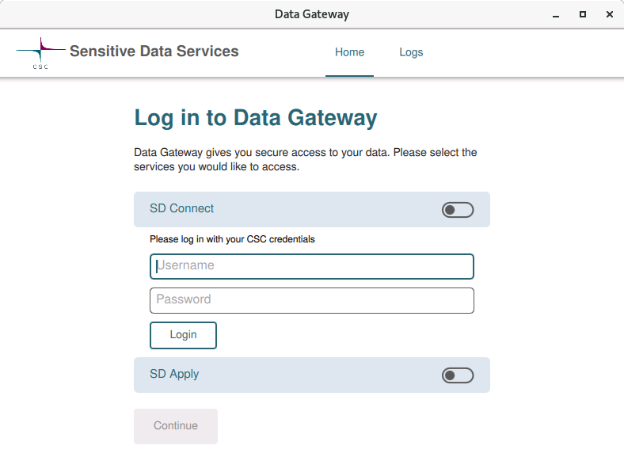
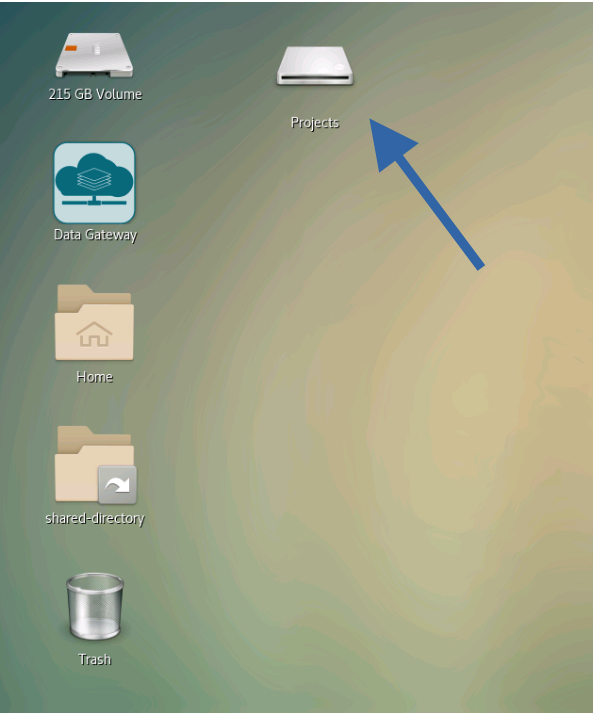

2 About SD Desktop
2.1 Overview
Where to find things:

- Applications:
- Start applications
- External Drive:
- For backup of project data and documents by the project manager
- Data Gateway:
- Mount SD Connect drive with sensitive data
- Shared-directory:
- This is where all project data and software should be kept
Ctrl+C and Ctrl+V do not always work in this version of Linux, for example it won’t work in the terminal. You can either use the right click of the mouse and select copy/paste or use Ctrl+Shift+C/V instead.
2.2 Data Gateway
To connect to the sensitive data and additionally provided software you will have to launch the Data Gateway first (the shortcut is located in the top left of your screen).
Double click on “Data Gateway” and click on the switch symbol next to “SD Connect”. Now sign in with your CSC username and password:

Note: You can ignore “SD Apply” for now.
Hit “Create” and then minimise this window. You will now see a new mounted drive called “Projects”


This is where all data and applications from SD Desktop reside. They are unencrypted on mount. Please note that the folder is read-only.
The Data Gateway can also be mounted over the command line with:
go-fuse -mount /media/volume/Projectsand closed with Ctrl + C.
2.3 The external backup drive
It is really important to save the data on the external drive. If the desktop crashes and needs rebooting everything in the shared or personal folders will be lost, but the external drive is not affected from this. The path to the external drive is media/volume.
I have set up the following structure on the external drive:
|-- admin
| |-- documentation*
| | |-- images*
| |-- scripts*
| |-- encryption_keys
|-- bin
|-- users
| |-- username
|-- data-out
| |-- username
* these folder might only available within the FinRegistry admin project2.5 Help pages inside SD Desktop
We have prepared a shared document inside SD Desktop.
- Connect to the Data Gateway
- Got to
Projects/SD\ connect/project_<projectnumber>/2004706_shared_admin_docswhere projectnumber is your CSC project number
- Open
working-with-sd-desktop.html(actually any of the html files will also work, but you will need to scroll to the top of the document before saving) in Firefox - Set as the homepage
- Open Application Menu (top right)
- Settings -> Home
- Homepage and new windows
- You might also want to set new pages to be blank
The path will look like this:
file:///home/<username>/Projects/SD%20Connect/project_<projectnumber>/2004706_shared_admin_docs/working-with-sd-desktop.htmlwhere username is your username and projectnumber is your project number.

2.6 Close your connection the SD Desktop
You can close your connection to your virtual Desktop in two ways:
Log out from your Desktop (in the workspace view, top right corner of the browser, select your username and log out). This will close all applications in your virtual Desktop and disconnect the work session. You will be able to access the virtual Desktop at any time after logging in to the services.
If you started a data analysis programmatically (you are running a script) you can close the browser window. This doesn’t interfere with the processes running. Thus, when you reconnect to your Desktop, you have all your tools and interfaces still open and can continue working. However, remember to log out from the Desktop once the analysis is finished. If you leave more than ten connections open, you will be unable to re-access the services.
Reminder: Never use the lock or reboot buttons in SD Desktop as you will not be able to connect to the Desktop again after that…